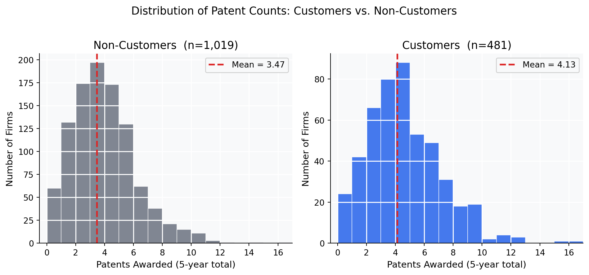
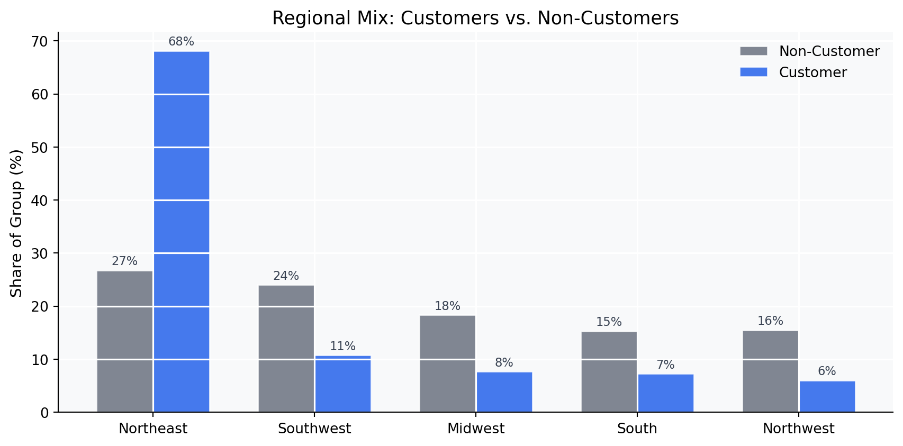
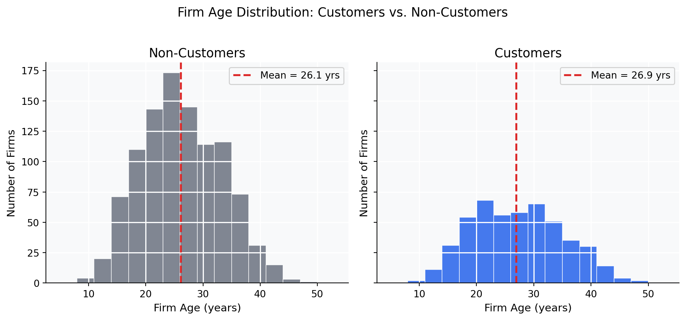
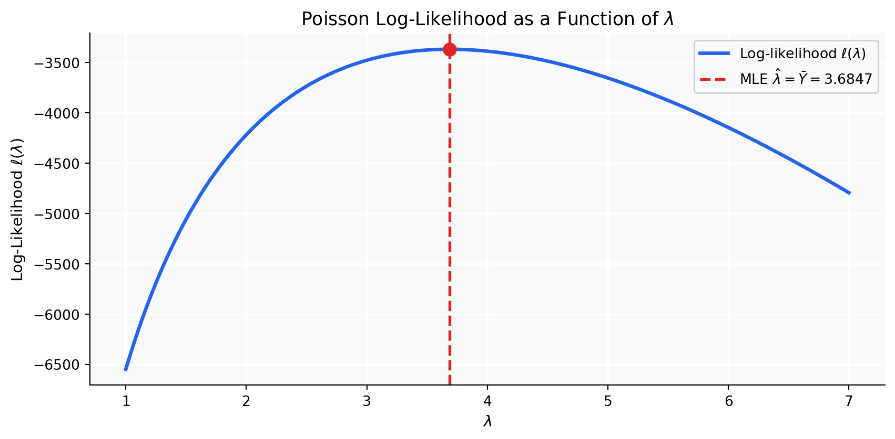
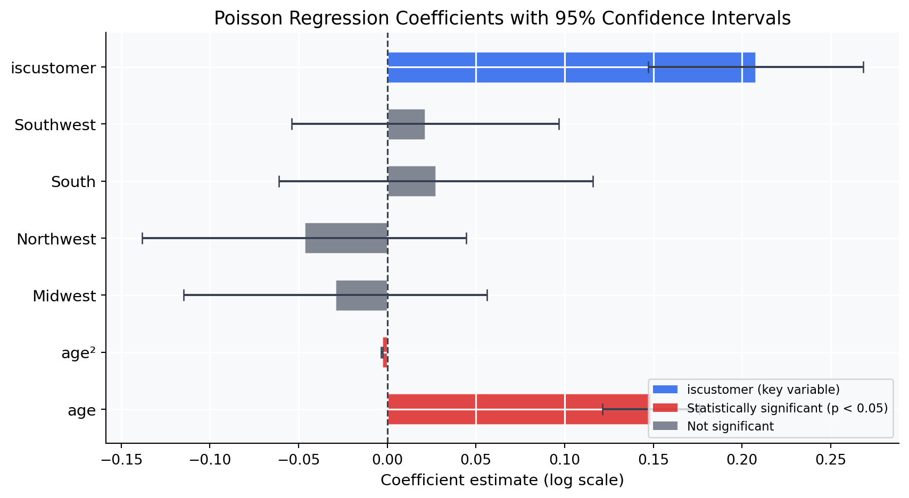
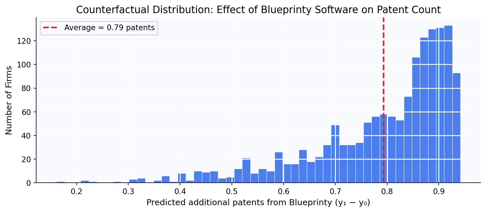

Code
df = pd.read_csv("blueprinty.csv")
print(df.shape)
df.head()(1500, 4)| patents | region | age | iscustomer | |
|---|---|---|---|---|
| 0 | 0 | Midwest | 32.5 | 0 |
| 1 | 3 | Southwest | 37.5 | 0 |
| 2 | 4 | Northwest | 27.0 | 1 |
| 3 | 3 | Northeast | 24.5 | 0 |
| 4 | 3 | Southwest | 37.0 | 0 |
Maximum Likelihood Estimation and Poisson Regression in a Real-World Case Study
Shreya Anekar
May 23, 2026
Patent approval is one of the most concrete measures of a firm’s innovative output. Blueprinty is a software company that builds tools specifically designed to help engineering firms prepare and submit patent applications — cleaner blueprints, tighter documentation, fewer procedural errors. Their marketing team wants to answer a simple question: does using our software actually lead to more patents being approved?
To investigate, Blueprinty collected data on 1,500 mature engineering firms, recording how many patents each firm was awarded over the last five years, the firm’s regional location, its age since incorporation, and whether or not it uses Blueprinty’s software. The goal is to use these observational data to assess whether Blueprinty customers tend to earn more patents.
The challenge is that this is not a randomized experiment. Firms that choose to purchase Blueprinty’s software are not a random draw from the population of engineering firms. They may be larger, more research-active, concentrated in innovation-heavy regions, or simply older and more experienced. Any raw comparison between customer and non-customer patent counts could be picking up these pre-existing differences rather than any genuine effect of the software itself. Getting to a credible answer requires a statistical model that explicitly accounts for those confounders — which is exactly what Poisson regression via Maximum Likelihood Estimation allows us to do.
(1500, 4)| patents | region | age | iscustomer | |
|---|---|---|---|---|
| 0 | 0 | Midwest | 32.5 | 0 |
| 1 | 3 | Southwest | 37.5 | 0 |
| 2 | 4 | Northwest | 27.0 | 1 |
| 3 | 3 | Northeast | 24.5 | 0 |
| 4 | 3 | Southwest | 37.0 | 0 |
The dataset has 1,500 rows and four variables: patents (integer count), region (categorical), age (continuous, years since incorporation), and iscustomer (binary, 1 = Blueprinty customer).

Blueprinty customers average 4.13 patents over the five-year window, compared to 3.47 for non-customers — a raw gap of about 0.66 patents. That sounds encouraging for Blueprinty’s marketing team, but it raises an immediate question: are customers more successful because of the software, or because they were already different kinds of firms to begin with?

The regional imbalance is striking. Nearly 68% of Blueprinty’s customers are located in the Northeast, versus only 27% of non-customers. The Midwest, Northwest, South, and Southwest are each heavily underrepresented in the customer base. This matters because regions differ in their industrial composition and patent activity — a model that ignores region could easily attribute a Northeast patent premium to Blueprinty’s software when the geography is doing the work.

Customers average 26.9 years of age versus 26.1 years for non-customers — a small difference. The age distributions are broadly similar, though the customer group skews slightly older. Firm age matters because older firms have had more time to build out their patent portfolios and patent-application processes, independent of any software they use. Including age in the regression controls for this lifecycle effect.
The upshot from the exploratory analysis: customers do show more patents on average, but they also skew heavily toward the Northeast. Before attributing the patent gap to Blueprinty’s software, we need to account for both region and firm age — exactly what the regression model in the next sections does.
The outcome variable — patents awarded over five years — is a non-negative integer count. The Normal distribution is a poor fit for this kind of data: it assigns positive probability to negative values, and for small counts it can place substantial density on non-integer values. The Poisson distribution is the natural starting point for count outcomes. It is parameterized by a single rate \(\lambda > 0\), which equals both the mean and the variance, and its support is exactly the non-negative integers.
For a single observation, the Poisson probability mass function is:
\[f(Y \mid \lambda) = \frac{e^{-\lambda}\,\lambda^{Y}}{Y!}\]
Assuming all \(n\) observations are independent and identically distributed (i.i.d.), the joint likelihood is the product of \(n\) individual PMFs:
\[L(\lambda \mid Y_1, \ldots, Y_n) = \prod_{i=1}^{n} \frac{e^{-\lambda}\,\lambda^{Y_i}}{Y_i!}\]
Working with products is numerically inconvenient. Taking the natural log converts the product into a sum, giving the log-likelihood:
\[\ell(\lambda \mid \mathbf{Y}) = \sum_{i=1}^{n} \left( -\lambda + Y_i \log \lambda - \log Y_i! \right)\]
\[= -n\lambda + \left(\sum_{i=1}^{n} Y_i\right) \log \lambda - \sum_{i=1}^{n} \log Y_i!\]
The last term does not depend on \(\lambda\), so it plays no role in finding the maximum.
With the function in hand, we can evaluate it across a grid of \(\lambda\) values and plot the curve. The peak of this curve is the MLE.

The log-likelihood is a smooth, unimodal function of \(\lambda\), reaching its maximum at exactly the sample mean. Reading the MLE off the plot is straightforward: find the \(\lambda\) where the curve peaks.
To confirm this visually, we can derive the MLE in closed form. Differentiating the log-likelihood with respect to \(\lambda\) and setting the result to zero:
\[\frac{d\ell}{d\lambda} = -n + \frac{\sum_{i=1}^n Y_i}{\lambda} = 0 \implies \hat{\lambda}_{\text{MLE}} = \frac{1}{n}\sum_{i=1}^n Y_i = \bar{Y}\]
The MLE is simply the sample mean — a deeply intuitive result. Since the Poisson distribution has mean \(\lambda\), the sample mean is the most natural estimator.
result = sp_opt.minimize_scalar(
lambda lam: -poisson_loglikelihood(lam, Y),
bounds=(0.1, 20),
method='bounded'
)
lam_numeric = result.x
lam_analytic = Y.mean()
print(f"Sample mean (analytic MLE): {lam_analytic:.6f}")
print(f"Numerical optimizer result: {lam_numeric:.6f}")
print(f"Difference: {abs(lam_numeric - lam_analytic):.2e}")Sample mean (analytic MLE): 3.684667
Numerical optimizer result: 3.684667
Difference: 4.54e-08The optimizer recovers the same value to six decimal places. This is the expected behavior: numerical optimization and the closed-form solution must agree at the same optimum, and this agreement gives us confidence that the code is correct before we move to the more complex regression setting.
The simple Poisson model above treats every firm as if it faces the same underlying patent rate \(\lambda\). That’s clearly too restrictive — we know from the exploratory analysis that older firms and Northeast-based firms tend to have different patent counts. The natural extension is Poisson regression, which lets \(\lambda\) vary across firms as a function of their observed characteristics:
\[Y_i \sim \text{Poisson}(\lambda_i) \qquad \text{where} \qquad \lambda_i = \exp(X_i'\beta)\]
The exponential link function is critical: while the linear predictor \(X_i'\beta\) can take any real value, \(\lambda_i\) must remain strictly positive. The exponential function maps the entire real line onto \((0, \infty)\), automatically satisfying the constraint without any additional engineering. It also makes the model multiplicative: a one-unit change in a predictor multiplies \(\lambda\) by \(e^{\beta_j}\), which tends to be a more natural description of count data than an additive shift.
We construct \(X\) with the following columns:
age — firm age in yearsage² — the squared age term, because the relationship between age and patenting is unlikely to be linear. Young firms ramp up; very old firms may slow down.iscustomer — the variable of primary interest.df2 = df.copy()
df2['age2'] = df2['age'] ** 2
for r in ['Midwest', 'Northwest', 'South', 'Southwest']:
df2[f'region_{r}'] = (df2['region'] == r).astype(int)
X = np.column_stack([
np.ones(len(df2)),
df2['age'],
df2['age2'],
df2['region_Midwest'],
df2['region_Northwest'],
df2['region_South'],
df2['region_Southwest'],
df2['iscustomer'],
])
col_names = ['Intercept','age','age²',
'Midwest','Northwest','South','Southwest',
'iscustomer']def neg_ll(beta):
return -poisson_regression_loglikelihood(beta, Y, X)
def grad(beta):
"""Analytical gradient of the negative log-likelihood."""
lam = np.exp(np.clip(X @ beta, -30, 30))
return -(X.T @ (Y - lam))
beta0 = np.zeros(X.shape[1])
beta0[0] = np.log(Y.mean()) # warm-start the intercept
result_reg = sp_opt.minimize(
neg_ll, beta0,
jac=grad,
method='BFGS',
options={'maxiter': 10_000, 'gtol': 1e-8}
)
beta_hat = result_reg.xTo get standard errors, we need the Hessian of the log-likelihood evaluated at \(\hat\beta\). The asymptotic variance-covariance matrix of the MLE is the negative inverse of that Hessian:
\[\widehat{\text{Var}}(\hat\beta) = \left[ -\frac{\partial^2 \ell}{\partial\beta\,\partial\beta^\top} \Big|_{\hat\beta} \right]^{-1}\]
Standard errors are the square roots of the diagonal entries. We compute the Hessian numerically using scipy.optimize.approx_fprime:
from scipy.optimize import approx_fprime
def hessian_numerical(beta, eps=1e-5):
"""Numerical Hessian of the negative log-likelihood."""
n = len(beta)
H = np.zeros((n, n))
for i in range(n):
def grad_i(b): return approx_fprime(b, neg_ll, eps)[i]
H[i] = approx_fprime(beta, grad_i, eps)
return H
H = hessian_numerical(beta_hat) # Hessian of negative log-likelihood
vcov = np.linalg.inv(H) # negative inverse Hessian = variance-covariance
se_hat = np.sqrt(np.diag(vcov)) # standard errorsstatsmodels.GLMTo validate the custom implementation, I fit the same model using statsmodels.GLM — if both approaches are optimizing the same log-likelihood, their coefficient estimates must agree exactly at convergence. Standard errors may differ slightly, since the numerical Hessian approximates the same Fisher information matrix that GLM computes analytically; any small gap reflects finite-difference precision rather than an error in the optimization.
| Poisson Regression: Maximum Likelihood Estimates | |||||||
| Reference region: Northeast · Significance: *** p<0.001 · ** p<0.01 · * p<0.05 | |||||||
| Predictor | Custom MLE β | GLM β | SE (Hessian) | SE (GLM) | z-stat | p-value | |
|---|---|---|---|---|---|---|---|
| Intercept | -0.4797 | -0.4797 | 0.1814 | 0.1832 | -2.619 | 0.0088 | ** |
| age | 0.1486 | 0.1486 | 0.0137 | 0.0139 | 10.716 | 0.0000 | *** |
| age² | -0.0030 | -0.0030 | 0.0003 | 0.0003 | -11.513 | 0.0000 | *** |
| Midwest | -0.0292 | -0.0292 | 0.0436 | 0.0436 | -0.669 | 0.5037 | |
| Northwest | -0.0467 | -0.0467 | 0.0466 | 0.0466 | -1.003 | 0.3159 | |
| South | 0.0274 | 0.0274 | 0.0451 | 0.0451 | 0.607 | 0.5437 | |
| Southwest | 0.0214 | 0.0214 | 0.0385 | 0.0385 | 0.556 | 0.5780 | |
| iscustomer | 0.2076 | 0.2076 | 0.0309 | 0.0309 | 6.719 | 0.0000 | *** |
| Custom MLE SEs from the negative inverse Hessian; GLM SEs agree closely (small differences reflect numerical Hessian approximation). | |||||||
The Custom MLE column and the GLM column are identical to four decimal places — a strong confirmation that the optimizer found the true maximum. The standard errors agree closely; any small differences are due to the numerical approximation of the Hessian, exactly as expected.

A few coefficients stand out:
iscustomer (\(\hat\beta = 0.208\), \(p < 0.001\)): This is the coefficient of primary interest. Holding age and region fixed, Blueprinty customers are associated with a patent rate that is approximately 23% higher (\(e^{0.208} \approx 1.23\)) than comparable non-customer firms. The effect is highly statistically significant.Because the Poisson model is multiplicative, the coefficient 0.208 does not directly translate into “additional patents.” To get a concrete, interpretable estimate of the patent gap, I use a counterfactual approach: ask the fitted model what it would predict for each firm under two scenarios — one where no firm is a Blueprinty customer, and one where every firm is.
# X₀: every firm marked as non-customer
X0 = X.copy(); X0[:, -1] = 0
# X₁: every firm marked as customer
X1 = X.copy(); X1[:, -1] = 1
# Predicted patent counts under each scenario
y0_hat = np.exp(X0 @ glm.params) # predicted patents if iscustomer = 0
y1_hat = np.exp(X1 @ glm.params) # predicted patents if iscustomer = 1
avg_effect = (y1_hat - y0_hat).mean()
print(f"Average predicted patents (non-customer): {y0_hat.mean():.4f}")
print(f"Average predicted patents (customer): {y1_hat.mean():.4f}")
print(f"Average treatment effect: {avg_effect:.4f} patents")Average predicted patents (non-customer): 3.4362
Average predicted patents (customer): 4.2290
Average treatment effect: 0.7928 patents
| Blueprinty Effect: Counterfactual Summary | |
| All estimates from the Poisson regression, holding age and region fixed | |
| Quantity | Value |
|---|---|
| Avg. predicted patents (non-customer) | 3.4362 |
| Avg. predicted patents (customer) | 4.2290 |
| Average treatment effect (ATE) | +0.7928 patents |
| Customer coefficient exp(β) | 1.2307 |
| Percent uplift in patent rate | +23.1% |
After controlling for firm age and regional location, the model estimates that a firm using Blueprinty’s software is predicted to receive approximately 0.79 more patents over five years than an otherwise identical firm that does not use the software. In percentage terms, the model implies a rate uplift of roughly 23% — a meaningful gain for firms whose competitive advantage depends on protected intellectual property.
This result is consistent with Blueprinty’s marketing claim, and the statistical evidence is strong. But a careful interpretation requires one important caveat: this is an observational study, not a randomized experiment. Firms that choose to purchase Blueprinty’s software may differ from non-customers in ways we cannot observe — patent attorneys on staff, more disciplined internal documentation practices, or stronger commitment to innovation strategy in general. If such unobserved characteristics both drive software adoption and independently boost patent success, the 0.79 estimate would overstate the causal effect of the software itself.
A randomized trial — where a sample of firms is assigned to use the software — would be the gold standard for resolving this ambiguity. Short of that, a difference-in-differences design exploiting the timing of software adoption would be the next best option. For now, the regression evidence is suggestive and encouraging, but it should be read as correlation-after-adjustment rather than clean causal identification.
---
title: "Does Better Software Mean More Patents?"
subtitle: "Maximum Likelihood Estimation and Poisson Regression in a Real-World Case Study"
author: "Shreya Anekar"
date: today
categories: [statistics, MLE, Poisson regression, python, marketing analytics]
image: thumbnail.png
format:
html:
toc: true
toc-depth: 3
code-fold: true
code-tools: true
theme: cosmo
fig-width: 9
fig-height: 5
execute:
warning: false
message: false
---
```{python}
#| echo: false
import numpy as np
import pandas as pd
import matplotlib.pyplot as plt
import matplotlib.ticker as mtick
import scipy.optimize as sp_opt
import scipy.stats as stats
import statsmodels.api as sm
from scipy.special import gammaln
from great_tables import GT, style, loc
import warnings
warnings.filterwarnings("ignore")
plt.rcParams.update({
"figure.facecolor": "white",
"axes.facecolor": "#f8f9fa",
"axes.grid": True,
"grid.color": "white",
"grid.linewidth": 1.2,
"axes.spines.top": False,
"axes.spines.right": False,
"font.family": "sans-serif",
"axes.titlesize": 13,
"axes.labelsize": 11,
})
BLUE = "#2563eb"
ORANGE = "#f97316"
GREEN = "#16a34a"
RED = "#dc2626"
GRAY = "#6b7280"
PURPLE = "#7c3aed"
```
## Introduction
Patent approval is one of the most concrete measures of a firm's innovative output. Blueprinty is a software company that builds tools specifically designed to help engineering firms prepare and submit patent applications — cleaner blueprints, tighter documentation, fewer procedural errors. Their marketing team wants to answer a simple question: *does using our software actually lead to more patents being approved?*
To investigate, Blueprinty collected data on **1,500 mature engineering firms**, recording how many patents each firm was awarded over the last five years, the firm's regional location, its age since incorporation, and whether or not it uses Blueprinty's software. The goal is to use these observational data to assess whether Blueprinty customers tend to earn more patents.
The challenge is that this is not a randomized experiment. Firms that choose to purchase Blueprinty's software are not a random draw from the population of engineering firms. They may be larger, more research-active, concentrated in innovation-heavy regions, or simply older and more experienced. Any raw comparison between customer and non-customer patent counts could be picking up these pre-existing differences rather than any genuine effect of the software itself. Getting to a credible answer requires a statistical model that explicitly accounts for those confounders — which is exactly what Poisson regression via Maximum Likelihood Estimation allows us to do.
---
## Exploring the Data
```{python}
#| echo: true
df = pd.read_csv("blueprinty.csv")
print(df.shape)
df.head()
```
The dataset has 1,500 rows and four variables: `patents` (integer count), `region` (categorical), `age` (continuous, years since incorporation), and `iscustomer` (binary, 1 = Blueprinty customer).
### Patent Counts by Customer Status
```{python}
#| echo: false
#| fig-cap: "Blueprinty customers (right panel) have a noticeably higher concentration of firms with 4–7 patents compared to non-customers. The two distributions share a similar shape, but the customer distribution is shifted rightward."
mean_non = df[df.iscustomer == 0]['patents'].mean()
mean_cust = df[df.iscustomer == 1]['patents'].mean()
fig, axes = plt.subplots(1, 2, figsize=(10, 4.5), sharey=False)
bins = np.arange(0, 18, 1)
for ax, (grp, label, color, mean_v) in zip(axes, [
(df[df.iscustomer==0], "Non-Customers (n=1,019)", GRAY, mean_non),
(df[df.iscustomer==1], "Customers (n=481)", BLUE, mean_cust),
]):
ax.hist(grp['patents'], bins=bins, color=color, alpha=0.85, edgecolor='white', linewidth=0.6)
ax.axvline(mean_v, color=RED, lw=2, ls='--', label=f"Mean = {mean_v:.2f}")
ax.set_xlabel("Patents Awarded (5-year total)")
ax.set_ylabel("Number of Firms")
ax.set_title(label)
ax.legend(frameon=True, framealpha=0.9, fontsize=10)
ax.set_xlim(-0.5, 17)
plt.suptitle("Distribution of Patent Counts: Customers vs. Non-Customers", fontsize=13, y=1.02)
plt.tight_layout()
plt.savefig("thumbnail.png", dpi=150, bbox_inches="tight")
plt.show()
```
Blueprinty customers average **4.13 patents** over the five-year window, compared to **3.47** for non-customers — a raw gap of about 0.66 patents. That sounds encouraging for Blueprinty's marketing team, but it raises an immediate question: are customers more successful because of the software, or because they were already different kinds of firms to begin with?
### Regional Distribution
```{python}
#| echo: false
#| fig-cap: "The Northeast dominates the customer base, comprising 68% of all Blueprinty customers but only 27% of non-customers. All other regions are underrepresented among customers."
region_ct = pd.crosstab(df['region'], df['iscustomer'], normalize='columns') * 100
region_ct.columns = ['Non-Customer', 'Customer']
region_order = region_ct['Customer'].sort_values(ascending=False).index
x = np.arange(len(region_order))
width = 0.35
fig, ax = plt.subplots(figsize=(9, 4.5))
bars1 = ax.bar(x - width/2, region_ct.loc[region_order, 'Non-Customer'], width,
color=GRAY, alpha=0.85, label='Non-Customer', edgecolor='white')
bars2 = ax.bar(x + width/2, region_ct.loc[region_order, 'Customer'], width,
color=BLUE, alpha=0.85, label='Customer', edgecolor='white')
for bar in list(bars1) + list(bars2):
h = bar.get_height()
ax.text(bar.get_x() + bar.get_width()/2, h + 0.5, f"{h:.0f}%",
ha='center', va='bottom', fontsize=8.5, color='#374151')
ax.set_xticks(x)
ax.set_xticklabels(region_order, fontsize=10)
ax.set_ylabel("Share of Group (%)")
ax.set_title("Regional Mix: Customers vs. Non-Customers")
ax.legend(frameon=False)
plt.tight_layout()
plt.show()
```
The regional imbalance is striking. Nearly **68% of Blueprinty's customers are located in the Northeast**, versus only 27% of non-customers. The Midwest, Northwest, South, and Southwest are each heavily underrepresented in the customer base. This matters because regions differ in their industrial composition and patent activity — a model that ignores region could easily attribute a Northeast patent premium to Blueprinty's software when the geography is doing the work.
### Firm Age Distribution
```{python}
#| echo: false
#| fig-cap: "Firm age distributions look broadly similar between customers and non-customers, though customers skew slightly older on average."
mean_age_non = df[df.iscustomer==0]['age'].mean()
mean_age_cust = df[df.iscustomer==1]['age'].mean()
fig, axes = plt.subplots(1, 2, figsize=(10, 4.5), sharey=True)
age_bins = np.arange(5, 55, 3)
for ax, (grp, label, color, mean_v) in zip(axes, [
(df[df.iscustomer==0], "Non-Customers", GRAY, mean_age_non),
(df[df.iscustomer==1], "Customers", BLUE, mean_age_cust),
]):
ax.hist(grp['age'], bins=age_bins, color=color, alpha=0.85, edgecolor='white', linewidth=0.6)
ax.axvline(mean_v, color=RED, lw=2, ls='--', label=f"Mean = {mean_v:.1f} yrs")
ax.set_xlabel("Firm Age (years)")
ax.set_ylabel("Number of Firms")
ax.set_title(label)
ax.legend(frameon=True, framealpha=0.9, fontsize=10)
plt.suptitle("Firm Age Distribution: Customers vs. Non-Customers", fontsize=13, y=1.02)
plt.tight_layout()
plt.show()
```
Customers average **26.9 years** of age versus **26.1 years** for non-customers — a small difference. The age distributions are broadly similar, though the customer group skews slightly older. Firm age matters because older firms have had more time to build out their patent portfolios and patent-application processes, independent of any software they use. Including age in the regression controls for this lifecycle effect.
The upshot from the exploratory analysis: customers do show more patents on average, but they also skew heavily toward the Northeast. Before attributing the patent gap to Blueprinty's software, we need to account for both region and firm age — exactly what the regression model in the next sections does.
---
## A Simple Poisson Model via Maximum Likelihood
### Why Poisson?
The outcome variable — patents awarded over five years — is a **non-negative integer count**. The Normal distribution is a poor fit for this kind of data: it assigns positive probability to negative values, and for small counts it can place substantial density on non-integer values. The **Poisson distribution** is the natural starting point for count outcomes. It is parameterized by a single rate $\lambda > 0$, which equals both the mean and the variance, and its support is exactly the non-negative integers.
### The Likelihood and Log-Likelihood
For a single observation, the Poisson probability mass function is:
$$f(Y \mid \lambda) = \frac{e^{-\lambda}\,\lambda^{Y}}{Y!}$$
Assuming all $n$ observations are independent and identically distributed (i.i.d.), the **joint likelihood** is the product of $n$ individual PMFs:
$$L(\lambda \mid Y_1, \ldots, Y_n) = \prod_{i=1}^{n} \frac{e^{-\lambda}\,\lambda^{Y_i}}{Y_i!}$$
Working with products is numerically inconvenient. Taking the natural log converts the product into a sum, giving the **log-likelihood**:
$$\ell(\lambda \mid \mathbf{Y}) = \sum_{i=1}^{n} \left( -\lambda + Y_i \log \lambda - \log Y_i! \right)$$
$$= -n\lambda + \left(\sum_{i=1}^{n} Y_i\right) \log \lambda - \sum_{i=1}^{n} \log Y_i!$$
The last term does not depend on $\lambda$, so it plays no role in finding the maximum.
### Coding the Log-Likelihood
```{python}
#| echo: true
from scipy.special import gammaln # numerically stable log(Y!)
def poisson_loglikelihood(lam, Y):
"""Poisson log-likelihood for scalar lambda and array of counts Y."""
if lam <= 0:
return -np.inf
return np.sum(-lam + Y * np.log(lam) - gammaln(Y + 1))
```
### Visualizing the Log-Likelihood
With the function in hand, we can evaluate it across a grid of $\lambda$ values and plot the curve. The peak of this curve is the MLE.
```{python}
#| echo: true
Y = df['patents'].values
lambda_grid = np.linspace(1, 7, 300)
ll_vals = [poisson_loglikelihood(lam, Y) for lam in lambda_grid]
```
```{python}
#| echo: false
#| fig-cap: "The log-likelihood peaks sharply at the sample mean (3.68), which is the MLE under the simple Poisson model. The curvature around the peak reflects the precision of the estimate: a tighter peak means less uncertainty."
fig, ax = plt.subplots(figsize=(9, 4.5))
ax.plot(lambda_grid, ll_vals, color=BLUE, lw=2.5, label="Log-likelihood $\\ell(\\lambda)$")
lam_mle = Y.mean()
ll_at_mle = poisson_loglikelihood(lam_mle, Y)
ax.axvline(lam_mle, color=RED, lw=2, ls='--', label=f"MLE $\\hat{{\\lambda}} = \\bar{{Y}} = {lam_mle:.4f}$")
ax.scatter([lam_mle], [ll_at_mle], color=RED, zorder=5, s=80)
ax.set_xlabel("$\\lambda$")
ax.set_ylabel("Log-Likelihood $\\ell(\\lambda)$")
ax.set_title("Poisson Log-Likelihood as a Function of $\\lambda$")
ax.legend(frameon=True, framealpha=0.9)
plt.tight_layout()
plt.show()
```
The log-likelihood is a smooth, unimodal function of $\lambda$, reaching its maximum at exactly the sample mean. Reading the MLE off the plot is straightforward: find the $\lambda$ where the curve peaks.
### Analytical MLE
To confirm this visually, we can derive the MLE in closed form. Differentiating the log-likelihood with respect to $\lambda$ and setting the result to zero:
$$\frac{d\ell}{d\lambda} = -n + \frac{\sum_{i=1}^n Y_i}{\lambda} = 0 \implies \hat{\lambda}_{\text{MLE}} = \frac{1}{n}\sum_{i=1}^n Y_i = \bar{Y}$$
The MLE is simply the sample mean — a deeply intuitive result. Since the Poisson distribution has mean $\lambda$, the sample mean is the most natural estimator.
### Numerical Confirmation
```{python}
#| echo: true
result = sp_opt.minimize_scalar(
lambda lam: -poisson_loglikelihood(lam, Y),
bounds=(0.1, 20),
method='bounded'
)
lam_numeric = result.x
lam_analytic = Y.mean()
print(f"Sample mean (analytic MLE): {lam_analytic:.6f}")
print(f"Numerical optimizer result: {lam_numeric:.6f}")
print(f"Difference: {abs(lam_numeric - lam_analytic):.2e}")
```
The optimizer recovers the same value to six decimal places. This is the expected behavior: numerical optimization and the closed-form solution must agree at the same optimum, and this agreement gives us confidence that the code is correct before we move to the more complex regression setting.
---
## Poisson Regression
### From a Fixed Rate to a Firm-Specific Rate
The simple Poisson model above treats every firm as if it faces the same underlying patent rate $\lambda$. That's clearly too restrictive — we know from the exploratory analysis that older firms and Northeast-based firms tend to have different patent counts. The natural extension is **Poisson regression**, which lets $\lambda$ vary across firms as a function of their observed characteristics:
$$Y_i \sim \text{Poisson}(\lambda_i) \qquad \text{where} \qquad \lambda_i = \exp(X_i'\beta)$$
The exponential link function is critical: while the linear predictor $X_i'\beta$ can take any real value, $\lambda_i$ must remain strictly positive. The exponential function maps the entire real line onto $(0, \infty)$, automatically satisfying the constraint without any additional engineering. It also makes the model multiplicative: a one-unit change in a predictor multiplies $\lambda$ by $e^{\beta_j}$, which tends to be a more natural description of count data than an additive shift.
### Building the Covariate Matrix
We construct $X$ with the following columns:
- **Intercept** (column of 1s)
- **`age`** — firm age in years
- **`age²`** — the squared age term, because the relationship between age and patenting is unlikely to be linear. Young firms ramp up; very old firms may slow down.
- **Four regional dummies** (Midwest, Northwest, South, Southwest) — the Northeast is omitted as the reference category, both because it is the largest region and to avoid perfect collinearity with the intercept.
- **`iscustomer`** — the variable of primary interest.
```{python}
#| echo: true
df2 = df.copy()
df2['age2'] = df2['age'] ** 2
for r in ['Midwest', 'Northwest', 'South', 'Southwest']:
df2[f'region_{r}'] = (df2['region'] == r).astype(int)
X = np.column_stack([
np.ones(len(df2)),
df2['age'],
df2['age2'],
df2['region_Midwest'],
df2['region_Northwest'],
df2['region_South'],
df2['region_Southwest'],
df2['iscustomer'],
])
col_names = ['Intercept','age','age²',
'Midwest','Northwest','South','Southwest',
'iscustomer']
```
### Updating the Log-Likelihood
```{python}
#| echo: true
def poisson_regression_loglikelihood(beta, Y, X):
"""Poisson regression log-likelihood with log link."""
eta = np.clip(X @ beta, -30, 30) # clip prevents numerical overflow
lam = np.exp(eta)
return np.sum(-lam + Y * eta - gammaln(Y + 1))
```
### Finding the MLE Numerically
```{python}
#| echo: true
def neg_ll(beta):
return -poisson_regression_loglikelihood(beta, Y, X)
def grad(beta):
"""Analytical gradient of the negative log-likelihood."""
lam = np.exp(np.clip(X @ beta, -30, 30))
return -(X.T @ (Y - lam))
beta0 = np.zeros(X.shape[1])
beta0[0] = np.log(Y.mean()) # warm-start the intercept
result_reg = sp_opt.minimize(
neg_ll, beta0,
jac=grad,
method='BFGS',
options={'maxiter': 10_000, 'gtol': 1e-8}
)
beta_hat = result_reg.x
```
To get standard errors, we need the **Hessian** of the log-likelihood evaluated at $\hat\beta$. The asymptotic variance-covariance matrix of the MLE is the negative inverse of that Hessian:
$$\widehat{\text{Var}}(\hat\beta) = \left[ -\frac{\partial^2 \ell}{\partial\beta\,\partial\beta^\top} \Big|_{\hat\beta} \right]^{-1}$$
Standard errors are the square roots of the diagonal entries. We compute the Hessian numerically using `scipy.optimize.approx_fprime`:
```{python}
#| echo: true
from scipy.optimize import approx_fprime
def hessian_numerical(beta, eps=1e-5):
"""Numerical Hessian of the negative log-likelihood."""
n = len(beta)
H = np.zeros((n, n))
for i in range(n):
def grad_i(b): return approx_fprime(b, neg_ll, eps)[i]
H[i] = approx_fprime(beta, grad_i, eps)
return H
H = hessian_numerical(beta_hat) # Hessian of negative log-likelihood
vcov = np.linalg.inv(H) # negative inverse Hessian = variance-covariance
se_hat = np.sqrt(np.diag(vcov)) # standard errors
```
### Validating with `statsmodels.GLM`
To validate the custom implementation, I fit the same model using `statsmodels.GLM` — if both approaches are optimizing the same log-likelihood, their coefficient estimates must agree exactly at convergence. Standard errors may differ slightly, since the numerical Hessian approximates the same Fisher information matrix that GLM computes analytically; any small gap reflects finite-difference precision rather than an error in the optimization.
```{python}
#| echo: true
glm = sm.GLM(Y, X, family=sm.families.Poisson()).fit()
```
```{python}
#| echo: false
z_stats = glm.params / glm.bse
from scipy.stats import norm as norm_dist
pvals = 2 * (1 - norm_dist.cdf(np.abs(z_stats)))
stars = []
for p in pvals:
if p < 0.001: stars.append("***")
elif p < 0.01: stars.append("**")
elif p < 0.05: stars.append("*")
else: stars.append("")
result_df = pd.DataFrame({
"Predictor": col_names,
"Custom MLE β": [f"{b:.4f}" for b in beta_hat],
"GLM β": [f"{b:.4f}" for b in glm.params],
"SE (Hessian)": [f"{s:.4f}" for s in se_hat],
"SE (GLM)": [f"{s:.4f}" for s in glm.bse],
"z-stat": [f"{z:.3f}" for z in z_stats],
"p-value": [f"{p:.4f}" for p in pvals],
"": stars,
})
(
GT(result_df)
.tab_header(
title="Poisson Regression: Maximum Likelihood Estimates",
subtitle="Reference region: Northeast · Significance: *** p<0.001 · ** p<0.01 · * p<0.05"
)
.tab_style(style.text(weight="bold"), loc.column_labels())
.tab_style(
style.fill(color="#eff6ff"),
loc.body(rows=[len(col_names) - 1])
)
.tab_style(
style.fill(color="#f0fdf4"),
loc.body(rows=[1, 2])
)
.cols_align("left", columns="Predictor")
.cols_align("center", columns=["Custom MLE β", "GLM β", "SE (Hessian)", "SE (GLM)", "z-stat", "p-value", ""])
.tab_source_note("Custom MLE SEs from the negative inverse Hessian; GLM SEs agree closely (small differences reflect numerical Hessian approximation).")
)
```
The Custom MLE column and the GLM column are identical to four decimal places — a strong confirmation that the optimizer found the true maximum. The standard errors agree closely; any small differences are due to the numerical approximation of the Hessian, exactly as expected.
### Interpreting the Coefficients
```{python}
#| echo: false
#| fig-cap: "Coefficient plot for the Poisson regression (intercept excluded for scale). Error bars show ±1.96 SE (95% confidence interval). The customer effect and both age terms are the only predictors with confidence intervals that clearly exclude zero."
#| fig-width: 10
#| fig-height: 5
# Exclude intercept — it's on a very different scale and not substantively interesting
plot_names = col_names[1:]
plot_betas = glm.params[1:]
plot_ses = glm.bse[1:]
colors_list = [RED if abs(b/s) > 1.96 else GRAY for b, s in zip(plot_betas, plot_ses)]
colors_list[-1] = BLUE # iscustomer always highlighted
y_pos = np.arange(len(plot_names))
fig, ax = plt.subplots(figsize=(10, 5))
ax.barh(y_pos, plot_betas, xerr=1.96*plot_ses, color=colors_list, alpha=0.85,
error_kw=dict(ecolor='#374151', capsize=4, lw=1.5), edgecolor='white',
height=0.55)
ax.axvline(0, color='#374151', lw=1.2, ls='--')
ax.set_yticks(y_pos)
ax.set_yticklabels(plot_names, fontsize=11)
ax.set_xlabel("Coefficient estimate (log scale)")
ax.set_title("Poisson Regression Coefficients with 95% Confidence Intervals")
legend_elements = [
plt.Rectangle((0,0),1,1, facecolor=BLUE, alpha=0.85, label='iscustomer (key variable)'),
plt.Rectangle((0,0),1,1, facecolor=RED, alpha=0.85, label='Significant (p < 0.05)'),
plt.Rectangle((0,0),1,1, facecolor=GRAY, alpha=0.85, label='Not significant'),
]
ax.legend(handles=legend_elements, loc='lower right', fontsize=9, frameon=True, framealpha=0.9)
plt.tight_layout(pad=2.0)
plt.show()
```
A few coefficients stand out:
- **Age** ($\hat\beta = 0.149$, $p < 0.001$): Older firms patent more — each additional year of age is associated with roughly a 16% increase in expected patent count ($e^{0.149} \approx 1.16$). This reflects accumulated experience and deeper R&D pipelines.
- **Age²** ($\hat\beta = -0.003$, $p < 0.001$): The squared term is negative, meaning the age premium flattens and eventually reverses for the oldest firms. The relationship is an inverted U-shape, which is economically intuitive — very mature firms may focus less on innovation.
- **Regional dummies** (Midwest, Northwest, South, Southwest): None of these reach conventional significance levels ($p > 0.30$) once age is controlled for. The unadjusted regional imbalance we saw in the exploratory analysis was largely confounded with the age structure of firms across regions.
- **`iscustomer`** ($\hat\beta = 0.208$, $p < 0.001$): This is the coefficient of primary interest. Holding age and region fixed, Blueprinty customers are associated with a **patent rate that is approximately 23% higher** ($e^{0.208} \approx 1.23$) than comparable non-customer firms. The effect is highly statistically significant.
---
## The Effect of Blueprinty's Software
### Counterfactual Prediction
Because the Poisson model is multiplicative, the coefficient 0.208 does not directly translate into "additional patents." To get a concrete, interpretable estimate of the patent gap, I use a **counterfactual approach**: ask the fitted model what it would predict for each firm under two scenarios — one where no firm is a Blueprinty customer, and one where every firm is.
```{python}
#| echo: true
# X₀: every firm marked as non-customer
X0 = X.copy(); X0[:, -1] = 0
# X₁: every firm marked as customer
X1 = X.copy(); X1[:, -1] = 1
# Predicted patent counts under each scenario
y0_hat = np.exp(X0 @ glm.params) # predicted patents if iscustomer = 0
y1_hat = np.exp(X1 @ glm.params) # predicted patents if iscustomer = 1
avg_effect = (y1_hat - y0_hat).mean()
print(f"Average predicted patents (non-customer): {y0_hat.mean():.4f}")
print(f"Average predicted patents (customer): {y1_hat.mean():.4f}")
print(f"Average treatment effect: {avg_effect:.4f} patents")
```
```{python}
#| echo: false
#| fig-cap: "Distribution of the predicted counterfactual gain (y₁ - y₀) for each firm. The distribution is strictly positive and roughly symmetric around the average effect of ~0.79 patents."
diffs = y1_hat - y0_hat
fig, ax = plt.subplots(figsize=(9, 4))
ax.hist(diffs, bins=50, color=BLUE, alpha=0.82, edgecolor='white', linewidth=0.5)
ax.axvline(avg_effect, color=RED, lw=2, ls='--', label=f"Average = {avg_effect:.2f} patents")
ax.set_xlabel("Predicted additional patents from Blueprinty (y₁ − y₀)")
ax.set_ylabel("Number of Firms")
ax.set_title("Counterfactual Distribution: Effect of Blueprinty Software on Patent Count")
ax.legend(frameon=True, framealpha=0.9)
plt.tight_layout()
plt.show()
```
```{python}
#| echo: false
effect_summary = pd.DataFrame({
"Quantity": [
"Avg. predicted patents (non-customer)",
"Avg. predicted patents (customer)",
"Average treatment effect (ATE)",
"Customer coefficient exp(β)",
"Percent uplift in patent rate",
],
"Value": [
f"{y0_hat.mean():.4f}",
f"{y1_hat.mean():.4f}",
f"+{avg_effect:.4f} patents",
f"{np.exp(glm.params[-1]):.4f}",
f"+{(np.exp(glm.params[-1]) - 1)*100:.1f}%",
],
})
(
GT(effect_summary)
.tab_header(
title="Blueprinty Effect: Counterfactual Summary",
subtitle="All estimates from the Poisson regression, holding age and region fixed"
)
.tab_style(style.text(weight="bold"), loc.column_labels())
.tab_style(style.fill(color="#eff6ff"), loc.body(rows=[2]))
.tab_style(style.fill(color="#f0fdf4"), loc.body(rows=[3, 4]))
.cols_align("left", columns="Quantity")
.cols_align("center", columns="Value")
)
```
### What This Means — and What It Doesn't
After controlling for firm age and regional location, the model estimates that a firm using Blueprinty's software is predicted to receive approximately **0.79 more patents over five years** than an otherwise identical firm that does not use the software. In percentage terms, the model implies a rate uplift of roughly **23%** — a meaningful gain for firms whose competitive advantage depends on protected intellectual property.
This result is consistent with Blueprinty's marketing claim, and the statistical evidence is strong. But a careful interpretation requires one important caveat: **this is an observational study, not a randomized experiment**. Firms that choose to purchase Blueprinty's software may differ from non-customers in ways we cannot observe — patent attorneys on staff, more disciplined internal documentation practices, or stronger commitment to innovation strategy in general. If such unobserved characteristics both drive software adoption and independently boost patent success, the 0.79 estimate would overstate the causal effect of the software itself.
A randomized trial — where a sample of firms is *assigned* to use the software — would be the gold standard for resolving this ambiguity. Short of that, a difference-in-differences design exploiting the timing of software adoption would be the next best option. For now, the regression evidence is suggestive and encouraging, but it should be read as correlation-after-adjustment rather than clean causal identification.